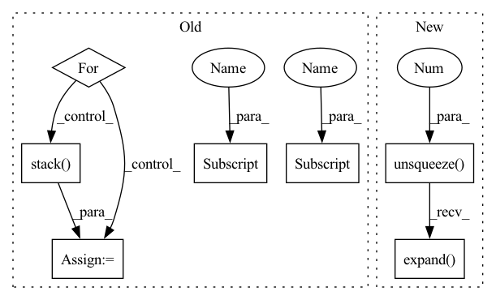

Pattern ID :9677
Before Change
//dummy_memory_matrix = torch.stack([self.memory_matrix[labels[i] == 1, :] for i in range(embeddings.size(0))])
//responses = self.cmn(embeddings, dummy_memory_matrix, dummy_memory_matrix)
responses = []
for i in range(embeddings.size(0)):
query_matrix = []
for j in range(len(labels[i] )):
if labels[i, j] == 1:
if j != len(labels[i] )-1:
query_matrix.extend(memory_matrix[j*self.num_prototype:(j+1)*self.num_prototype, :])
else:
query_matrix.extend(memory_matrix[j * self.num_prototype:, :])
query_matrix = torch.stack( query_matrix, 0)
query_matrix = query_matrix.unsqueeze(0)
response = self.cmn(embeddings[i].unsqueeze(0), query_matrix, query_matrix)
responses.append(response.squeeze(0))After Change
def decode(self, memory, src_mask, tgt, tgt_mask, past=None, memory_matrix=None, cmn_masks = None, labels = None):
embeddings = self.tgt_embed(tgt)
cmn_masks = cmn_masks.unsqueeze(1).expand( cmn_masks.shape[0], embeddings.size(1), cmn_masks.shape[-1])
// Memory querying and responding for textual features
//dummy_memory_matrix = memory_matrix.unsqueeze(0).expand(embeddings.size(0), memory_matrix.size(0), memory_matrix.size(1))
//dummy_memory_matrix = torch.stack([self.memory_matrix[labels[i] == 1, :] for i in range(embeddings.size(0))])In pattern: SUPERPATTERN
Frequency: 3
Non-data size: 7
Instances Fragment ID: 34876725
Project Name: markin-wang/xpronet
Commit Name: f1eadeb44fcd3ca935352b9cc7d30eab0fa8c753
Time: 2021-11-21
Author: cserwj@gmail.com
File Name: modules/base_cmn.py
M Class Name: Transformer
N Class Name: Transformer
M Method Name: decode(9)
N Method Name: decode(8)
M Parent Class: nn.Module
N Parent Class: nn.Module
M File Name: modules/base_cmn.py
N File Name: modules/base_cmn.py
M Start Line: 76
M End Line: 97
N Start Line: 76
N End Line: 86
Before Change
with torch.no_grad():
all_updated = []
for pattern_idx in range(len(pattern_features)):
// permutation is unique for every pattern hence cannot perform vector operations
// Padding is mixed up in the permutation, no need for additional processing
updated_feature = torch.stack( [pattern_features[pattern_idx] [i] for i in permutation[pattern_idx] ])
all_updated.append(updated_feature)
return torch.stack(all_updated).to(pattern_features.device)
After Change
// match indexing with feature size
if len(permutation.shape) < len(pattern_features.shape):
for _ in range(len(pattern_features.shape) - len(permutation.shape)):
extended_permutation = extended_permutation.unsqueeze(-1 )
// expand just creates a new view without extra copies
extended_permutation = extended_permutation.expand( pattern_features.shape)
// collect features with correct permutation in pattern dimention
indexed_features = torch.gather(pattern_features, dim=1, index=extended_permutation)
Fragment ID: 34876726
Project Name: maria-korosteleva/garment-pattern-estimation
Commit Name: 66c717b0d59467277210e38e07f0d574af577038
Time: 2021-06-14
Author: mariako@kaist.ac.kr
File Name: nn/metrics.py
M Class Name: ComposedPatternLoss
N Class Name: ComposedPatternLoss
M Method Name: _feature_permute(2)
N Method Name: _feature_permute(2)
M Parent Class:
N Parent Class:
M File Name: nn/metrics.py
N File Name: nn/metrics.py
M Start Line: 903
M End Line: 910
N Start Line: 903
N End Line: 914
Before Change
max_num_protype = max((labels[:,-1]*3 + labels[:,:-1].sum(-1))) * self.num_prototype
query_matrix = self.memory_matrix.new_zeros(att_feats.size(0), max_num_protype, self.memory_matrix.shape[-1])
cmn_masks = self.memory_matrix.new_zeros(query_matrix.shape[0], att_feats.size(1), max_num_protype)
for i in range(att_feats.size(0)):
cur_query_matrix = []
//print(labels[i])
for j in range(len(labels[i] )):
if labels[i, j] == 1:
if j != len(labels[i] )-1:
cur_query_matrix.extend(self.memory_matrix[j*self.num_prototype:(j+1)*self.num_prototype, :])
else:
cur_query_matrix.extend(self.memory_matrix[j * self.num_prototype:, :])
cur_query_matrix = torch.stack( cur_query_matrix, 0)
//print("111",query_matrix[i, :cur_query_matrix.shape[0], :].shape, cur_query_matrix.shape)
query_matrix[i, :cur_query_matrix.shape[0], :] = cur_query_matrix
cmn_masks[i, :, :cur_query_matrix.shape[0]] = 1
responses = self.cmn(att_feats, query_matrix, query_matrix, cmn_masks)After Change
// Memory querying and responding for visual features
dummy_memory_matrix = self.memory_matrix.unsqueeze(0).expand( att_feats.size(0), self.memory_matrix.size(0), self.memory_matrix.size(1))
responses = self.cmn(att_feats, dummy_memory_matrix, dummy_memory_matrix)
max_num_protype = max((labels[:,-1]*3 + labels[:,:-1].sum(-1))) * self.num_prototype
query_matrix = self.memory_matrix.new_zeros(att_feats.size(0), max_num_protype, self.memory_matrix.shape[-1]) Fragment ID: 34876720
Project Name: markin-wang/xpronet
Commit Name: 4ce89afc1120d8d6dd836304f6537d139f0505f1
Time: 2021-11-23
Author: cserwj@gmail.com
File Name: modules/base_cmn.py
M Class Name: BaseCMN
N Class Name: BaseCMN
M Method Name: _prepare_feature_forward(5)
N Method Name: _prepare_feature_forward(5)
M Parent Class: AttModel
N Parent Class: AttModel
M File Name: modules/base_cmn.py
N File Name: modules/base_cmn.py
M Start Line: 400
M End Line: 417
N Start Line: 400
N End Line: 401
Before Change
//dummy_memory_matrix = torch.stack([self.memory_matrix[labels[i] == 1, :] for i in range(embeddings.size(0))])
//responses = self.cmn(embeddings, dummy_memory_matrix, dummy_memory_matrix)
responses = []
for i in range(embeddings.size(0)):
query_matrix = []
for j in range(len(labels[i] )):
if labels[i, j] == 1:
if j != len(labels[i] )-1:
query_matrix.extend(memory_matrix[j*self.num_prototype:(j+1)*self.num_prototype, :])
else:
query_matrix.extend(memory_matrix[j * self.num_prototype:, :])
query_matrix = torch.stack( query_matrix, 0)
query_matrix = query_matrix.unsqueeze(0)
response = self.cmn(embeddings[i].unsqueeze(0), query_matrix, query_matrix)
responses.append(response.squeeze(0))After Change
def decode(self, memory, src_mask, tgt, tgt_mask, past=None, memory_matrix=None, cmn_masks = None, labels = None):
embeddings = self.tgt_embed(tgt)
cmn_masks = cmn_masks.unsqueeze(1).expand( cmn_masks.shape[0], embeddings.size(1), cmn_masks.shape[-1])
// Memory querying and responding for textual features
//dummy_memory_matrix = memory_matrix.unsqueeze(0).expand(embeddings.size(0), memory_matrix.size(0), memory_matrix.size(1))
//dummy_memory_matrix = torch.stack([self.memory_matrix[labels[i] == 1, :] for i in range(embeddings.size(0))]) Fragment ID: 34876717
Project Name: markin-wang/xpronet
Commit Name: f1eadeb44fcd3ca935352b9cc7d30eab0fa8c753
Time: 2021-11-21
Author: cserwj@gmail.com
File Name: modules/base_cmn.py
M Class Name: Transformer
N Class Name: Transformer
M Method Name: decode(9)
N Method Name: decode(8)
M Parent Class: nn.Module
N Parent Class: nn.Module
M File Name: modules/base_cmn.py
N File Name: modules/base_cmn.py
M Start Line: 76
M End Line: 97
N Start Line: 76
N End Line: 86